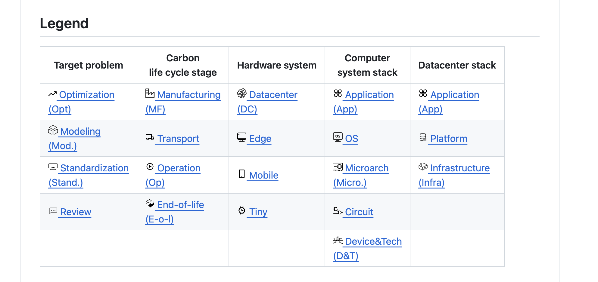

|
Yujie Zhao
Hey there!
I'm Yujie Zhao, a senior undergraduate at University of Science and Technology of China,
majoring in Microelectronics and Solid-State Electronics in in the school of Applied Physics and minoring in Computer Science at University of Science and Technology of China.
My research interests mainly lie in Computer architectures,
Hardware and Software Co-design,
Mchine learning Systems.
Please feel free if you share any common interests.
Email ·
Linkedin ·
Github
|

|
Publications
|
3D-Carbon: An Analytical Carbon Modeling Tool for 3D and 2.5D Integrated Circuits
Yujie Zhao, Yang Zhao, Cheng Wan, Yingyan (Celine) Lin
61th ACM/ESDA/IEEE Design Automation Conference (DAC), 2024
Iterated CVaR PbRL: Provably Efficient Risk-Aware
Yujie Zhao, Yicheng Zheng, Huezheng Wang
Submitted to ICML'24
|
|

|
An Analytical Carbon Modeling Tool for Sustainability Computing Architecture
Accepted by DAC'24,
Developed sustainability models and Electronic Design Automation (EDA) tools tailored for 2.5D/3D chips.
Proposed effective chip utilization strategies, incorporating fine-grained technological approaches and rational metrics to
strike a balance between performance and environmental costs.
|

|
Algorithms for Risk Awareness in Reinforcement Learning with Preference
Submmitted to ICML'24, under review
Proposed the first risk-aware Preference based Reinforcement learning algorithm (ICVaR-PbRL) with general function approximation, which is significant in various scenes like AI systems, autonomous driving, and healthcare.
Conducted a theoretical analysis of the algorithm’s performance and executed numerical experiments for validation. The outcomes demonstrate that our design achieves sub-linear regret, compared to the linear regret realized by the baselines.
|
|

|
Established a comprehensive github repository for Sustainability Computing
accessible at Sustainability Computing
Summarised and covered
20 classifications,
9 metrics,
10 tools,
10 parameters sources,
60 papers about sustainable computing.
|
|